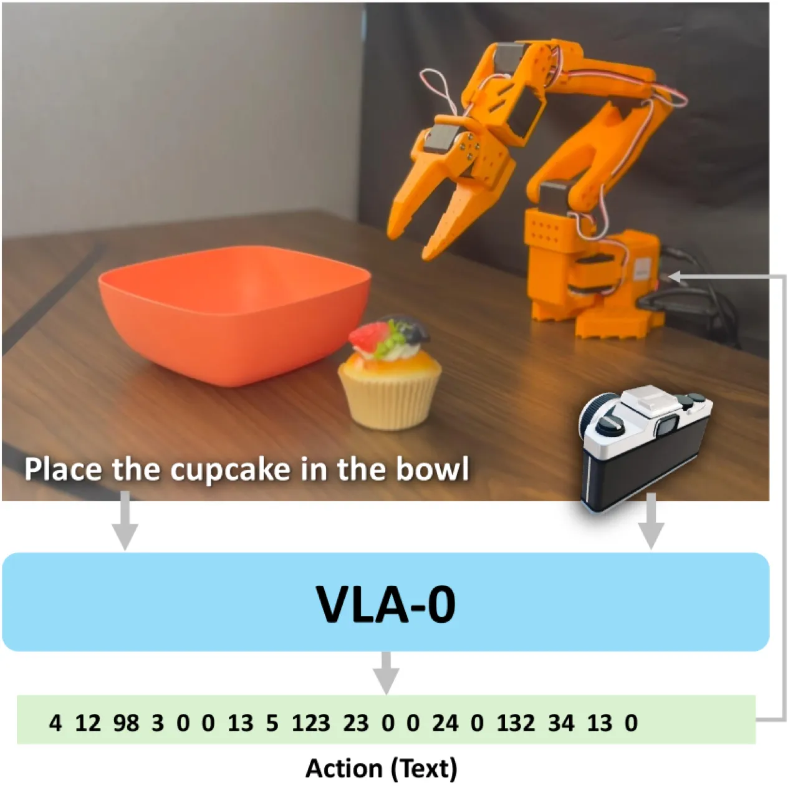
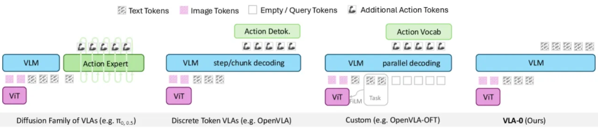
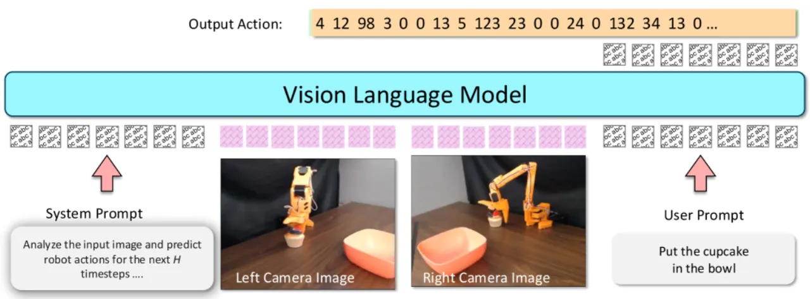
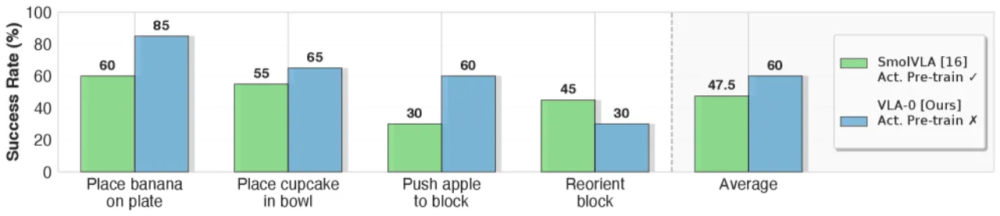

VLA-0 提出了一个出人意料的简单思路：将机器人连续动作归一化为整数并以空格分隔的文本输出，完全不修改 VLM 的词表、架构或解码器，即可在 LIBERO 仿真基准上超越所有同等训练数据量的方法（包括 π₀.₅-KI、OpenVLA-OFT、SmolVLA），并在真实机器人上胜过 SmolVLA 12.5 个百分点。
当前主流的 VLA（Vision-Language-Action）构建思路普遍需要对预训练 VLM 进行非平凡的架构改动：要么新增离散 action token（discrete token VLA），要么在 VLM 之上叠加专用 generative head，要么完全重设计网络结构。这些修改不仅复杂，还会破坏 VLM 原有的语言理解与 grounding 能力。
"It restricts the resolution of the action space, since fine-grained control can require thousands of bins, which conflicts with sharing the text vocabulary; and it compromises the pretrained language understanding of the VLM by repurposing its vocabulary for actions."
作者的核心问题是：能否在完全不修改模型架构的前提下，仅通过标准的 text generation fine-tuning，构建出性能领先的 VLA？VLA-0 给出了肯定答案。

VLA-0 的核心方法极为简洁：将 7-DOF 末端执行器的连续动作归一化到整数区间（默认 [0, 1000]），以空格分隔后作为纯文本目标，用标准的因果语言建模损失（causal language modeling）对现有 VLM 进行微调。推理时，模型自回归地输出动作整数序列，再反归一化为连续控制指令。

给定连续动作 a ∈ ℝ7，VLA-0 将每个维度线性映射至整数区间 [0, R]（resolution R，默认 R=1000），并拼接成形如 "512 398 621 500 501 499 1" 的字符串作为 target token 序列。整个流程完全复用 VLM 原有词表，无需新增特殊 token 或修改 embedding。消融实验表明 R=1000 为最优精度-稳定性折衷（R=250 时性能下降 1.5%，R=4000 时下降 0.5%）。
受 diffusion policy 启发，VLA-0 在推理时维护一个滑动窗口，对多个时间步的预测动作取平均，以消除自回归模型的单步抖动。消融实验显示，关闭 ensembling 后平均成功率从 94.7% 降至 92.0%（Δ = −2.0），是全部消融因素中影响最大的一项。
训练时以一定概率随机遮蔽动作文本，迫使模型学会从视觉与语言语境中预测动作，而非单纯地依赖前序动作文本做 auto-completion。去除该增强后成功率下降 1.2%（93.5%）。
将来自多个摄像头（腕部 + 俯视）的图像拼贴为单张大图输入 VLM，无需修改 vision encoder。消融显示该策略影响较小（−0.2%），但对真实场景的泛化有帮助。
主要在 LIBERO 仿真基准（4 个任务套件：Spatial、Object、Goal、Long）和真实机器人平台 SO-100 上评估。基础模型选用 Qwen-VL-2.5-3B（轻量高效），与 π₀.₅-KI、OpenVLA-OFT、SmolVLA、GR00T-N1 等多个 baseline 对比。评估指标为成功率（success rate）与平均排名（Avg. Rank）。
| 方法 | Spatial | Object | Goal | Long | Average | Avg. Rank |
|---|---|---|---|---|---|---|
| Diffusion Policy | 78.3 | 92.5 | 68.3 | 50.5 | 72.4 | 6.5 |
| π₀-FAST (Paligemma) | 87.0 | 63.0 | 89.0 | 48.0 | 71.8 | 6.0 |
| SmolVLA (0.24B) | 87.0 | 93.0 | 88.0 | 63.0 | 82.8 | 5.3 |
| SmolVLA (2.25B) | 93.0 | 94.0 | 91.0 | 77.0 | 88.8 | 4.0 |
| OpenVLA-OFT | 94.3 | 95.2 | 91.7 | 86.5 | 91.9 | 2.8 |
| π₀.₅-KI | 96.6 | 97.2 | 94.6 | 85.8 | 93.3 | 2.3 |
| VLA-0（本文） | 97.0 | 97.8 | 96.2 | 87.6 | 94.7 | 1.0 |
即使与使用了大规模机器人动作预训练数据的方法相比，VLA-0（无预训练，Avg. Rank 2.8）依然超越了 Octo（8.8）、OpenVLA（8.0）、π₀-FAST（6.5）、GR00T-N1（4.5）和 π₀（3.3），仅次于 OpenVLA-OFT（1.5）。

在四项真实机器人操作任务上，VLA-0 超越 SmolVLA 12.5 个百分点，尽管 SmolVLA 拥有专门的 SO-100 大规模预训练数据优势。这表明纯文本动作表示的泛化能力在真实场景中同样有效。

| 配置 | Ensemble | Masked Aug. | Resolution | 平均成功率 | Δ |
|---|---|---|---|---|---|
| 完整 VLA-0 | ✓ | ✓ | 1000 | 94.7 | 0.0 |
| 去掉 Ensemble | ✗ | ✓ | 1000 | 92.0 | −2.0 |
| 去掉 Masked Aug. | ✓ | ✗ | 1000 | 93.5 | −1.2 |
| 降低 Resolution | ✓ | ✓ | 250 | 93.2 | −1.5 |
| 提高 Resolution | ✓ | ✓ | 4000 | 94.2 | −0.5 |
| 去掉 Tiled Images | ✓ | ✓ | 1000 | 94.5 | −0.2 |
VLA-0 当前在 RTX 5090 GPU 上的推理频率仅为约 4 Hz，低于部分专用 VLA 方法。作者指出未来可通过量化（quantization）和蒸馏（distillation）等优化手段提升推理速度，但目前尚未完成。
论文仅评估了在 LIBERO 同等数据量下的性能，未实验 VLA-0 结合大规模跨实体机器人数据集（如 OpenX-Embodiment）预训练后的效果。作者将此列为重要的未来研究方向："A key area to explore is how VLA-0 would perform when trained with large-scale action data."
在 LIBERO-Long 子集（最长任务序列）上，VLA-0 成功率为 87.6%，低于其他三个子集（Spatial 97.0%、Object 97.8%、Goal 96.2%），且与使用大规模预训练的 OpenVLA-OFT（94.5%）相比仍有差距。这可能反映文本自回归方式在长序列动作累积误差上的固有挑战（inferred）。